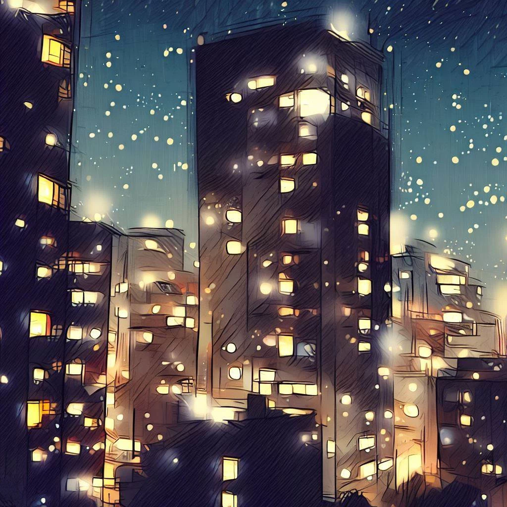
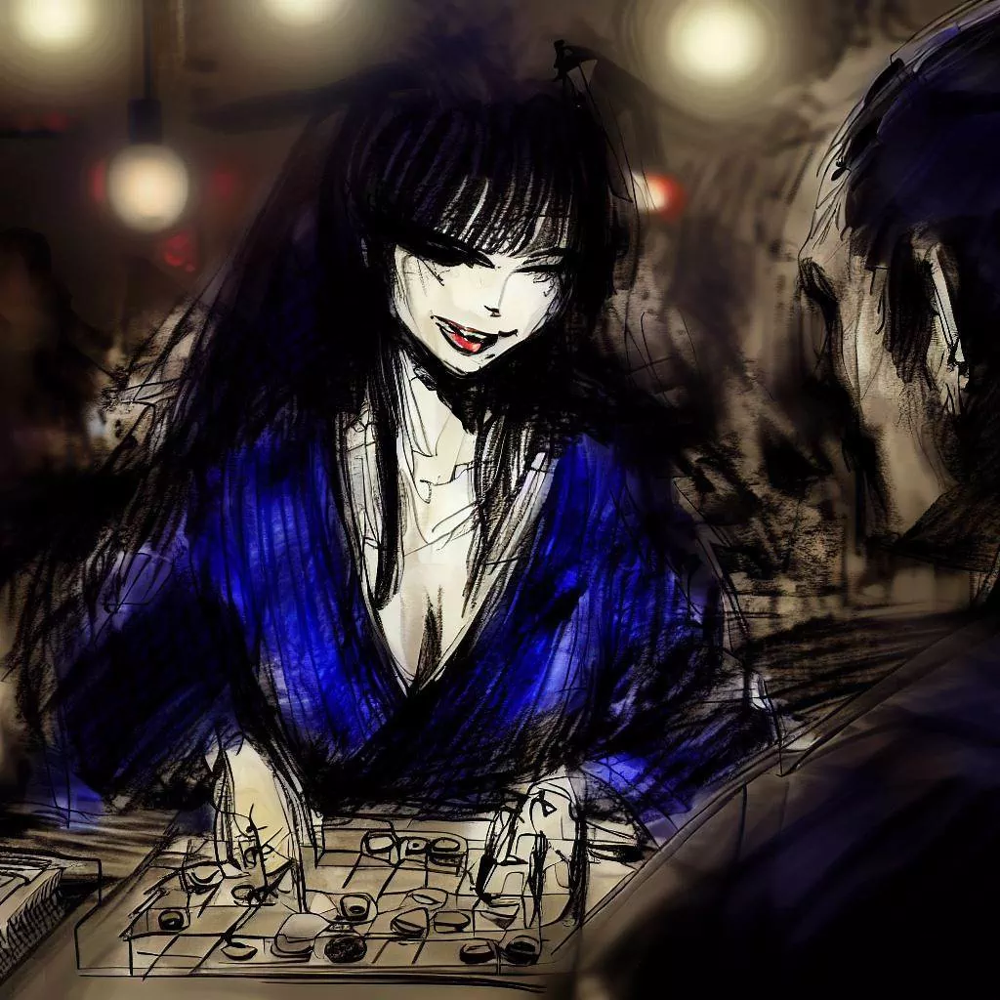
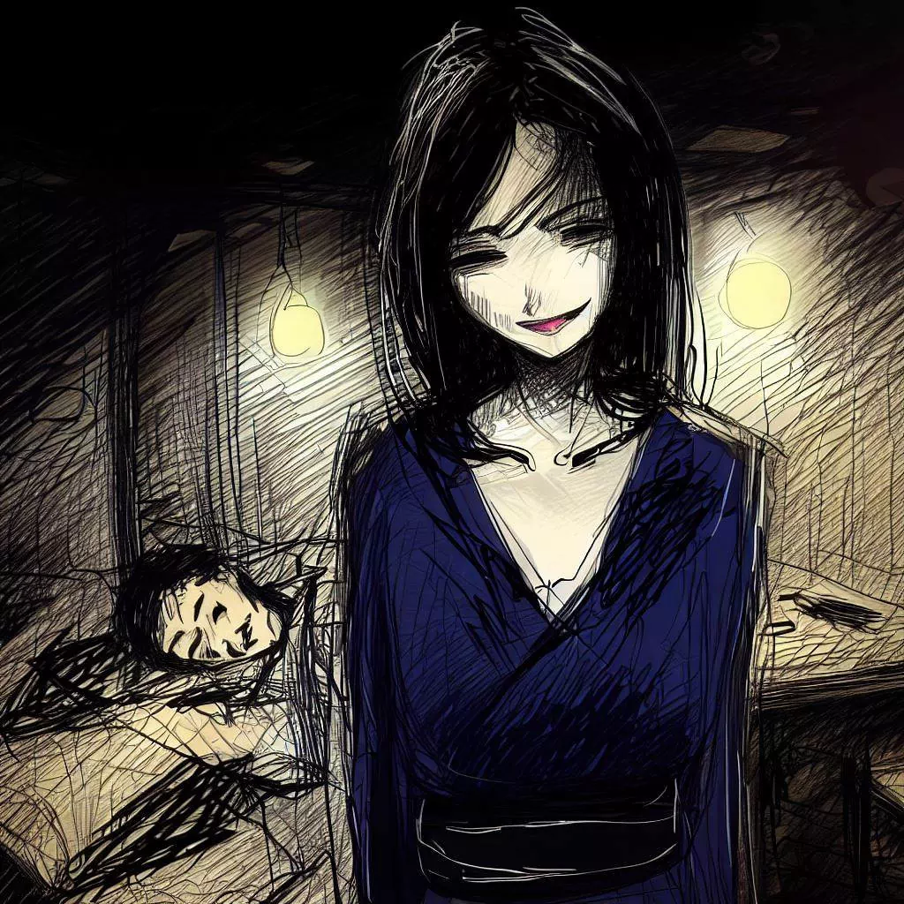

Komayo: Les Échos Mystiques du Jeu d'Ogi
Je voudrais prendre un moment pour exprimer ma gratitude envers Komayo, qui m'a initié à ce fascinant jeu de stratégie. Son charme et son mystère ont laissé une impression marquante dans ma vie. Ce qui suit est le récit de notre rencontre, un souvenir précieux que j'ai souhaité partager à travers ces lignes.
L'Échappatoire du Bureau
Après une longue journée passée dans l'atmosphère stérile de mon bureau, le crépuscule d'Osaka m'accueillait comme une délivrance. Abandonnant l'air conditionné artificiel, je m'immergeais dans la douce brise vivifiante du soir.
La frénésie diurne, aussi vaine que pesante, s'effaçait peu à peu, remplacée par une sérénité nocturne. Mes pensées, encombrées par le labeur routinier, commençaient à s'éclaircir sous l'immensité étoilée et le calme tranquille de la ville.

Je me laissais guider à travers les ruelles entrelacées de la ville. La monotonie du jour semblait se dissiper à chaque coin de rue, succédant au mystère de l'inconnu. Les gratte-ciels, sous leur voile nocturne, perdaient leur aura intimidante pour adopter une présence douce et accueillante.
La vibrante ambiance des allées marchandes, le parfum des restaurants de rue, et les murmures des conversations nocturnes créaient une toile urbaine exaltante. Mon esprit, bien qu'épuisé, cherchait un défi intellectuel, une distraction des tracas de la journée. C'est alors que j'aperçus une enseigne discrète, celle du Bar de la Régence, sanctuaire des joueurs de shogi renommés.
Niché dans cette ruelle silencieuse, ce sanctuaire m'appelait, susurrant la promesse d'une partie. L'écho de cette discrétion résonnait en moi, dessinant une tentation pleine de mystère et de curiosité.
L'Antre de la Partie
Le Bar de la Régence, avec son éclairage tamisé et son ambiance chaleureuse, m'offrait un havre de tranquillité. La sérénité du lieu était teintée par les nombreuses parties de shogi qui, au fil des générations, avaient animé les soirées des amateurs du jeu.
Avant de plonger dans l'univers du shogi, je commandai un verre de saké. Le parquet ancien craquait doucement sous mes pas, tandis que mes yeux s'habituaient à la lumière feutrée. Le cliquetis des pièces de shogi, les murmures des joueurs et le bruissement des éventails ajoutaient à l'atmosphère mystique. L'arôme du bois vieilli, mêlé à celui de l'encens, apaisait mes sens, me préparant à la joute intellectuelle à venir.
Des joueurs de tous âges étaient absorbés par leur partie, chaque mouvement marqué par des expressions de tension, de joie ou de déception. C'était un ballet silencieux de stratégies et de sagacité qui se déroulait sous mes yeux.
Mon regard fut attiré par une femme assise seule à une table isolée. Sa tranquillité et sa beauté subtile éveillèrent ma curiosité. D'un pas discret mais déterminé, je m'approchai, esquissai un sourire courtois et lui proposai une partie.
Leçon Nocturne
Sa réponse fut un sourire qui illumina son visage, une acceptation silencieuse.
Avec une élégance inattendue, elle révéla le plateau de jeu, précédemment dissimulé sous un tissu soyeux. Mes yeux se posèrent sur une surface de jeu compacte, un carré de huit cases de côté, contrairement au traditionnel shogiban. Avant que je puisse exprimer ma surprise, l'inconnue m'éclaira, sa voix se mêlant à l'air comme une douce brise d'été.
"C'est un ogi, le jeu des rois," déclara-t-elle. "Nous disposons chacun d'un ensemble de 18 pièces pour commencer." Un sourire amusé éclairait son visage à la révélation de ces détails intrigants.

"Dans cet échiquier de silhouettes, une se distingue par sa majesté," précisa-t-elle, désignant la pièce centrale d'une élégance particulière. "La princesse. Digne du fou et libre comme le cavalier, elle règne sur l'ogiban, apportant une touche de romantisme à cette variante contemporaine du shogi."
Elle souriait de ma surprise. Un regard malicieux brillait dans ses yeux, ajoutant à son mystère. Ses doigts agiles et précis positionnaient les pièces sur le plateau, animant notre champ de bataille.
Alors qu'elle disposait les pièces, je remarquai des tours aux coins de l'ogiban. "Les lances traditionnelles sont remplacées par ces tours," expliqua-t-elle, comme si elle lisait dans mes pensées.
Les pièces étaient maintenant en place, en parfaite harmonie. Tandis que je préparais ma stratégie, je me sentais irrésistiblement attiré par ce puzzle inédit, sublimé par le scintillement doré des pièces et le regard pétillant de ma mystérieuse adversaire.
L'Épreuve de l'Esprit
Le tic-tac de l'horloge marquait le passage du temps, tandis que le silence de la bataille n'était brisé que par le déplacement subtil des pièces sur l'ogiban. Le fou avançait avec détermination, le cavalier bondissait avec audace et la princesse régnait avec efficacité sur le champ de bataille. Ce ballet quasi imperceptible instillait une tension palpable dans la pièce.
Mon adversaire, énigmatique, manœuvrait ses pièces avec une habileté déconcertante. Les capturées, loin d'être éliminées, étaient astucieusement réintégrées dans la bataille, renforçant mes lignes arrières. Chaque mouvement devenait une leçon de tactique, chaque pièce liée à l'autre par des fils invisibles tissés avec une précision chirurgicale.
Je résistais, manœuvrant mes pièces avec une détermination farouche, repoussant ses attaques par une défense méticuleuse. Cependant, chaque décision drainait mes forces, chaque mouvement devenait de plus en plus laborieux. Mes paupières se faisaient lourdes, la fatigue cherchant à prendre le dessus.
Et alors que je luttai pour rester éveillé, le sommeil, cet ennemi insidieux, triompha. Mon corps céda à l'épuisement, les lumières du bar dansant devant mes yeux qui se fermaient. Je plongeai dans une obscurité apaisante, la dernière image gravée dans ma mémoire étant le sourire triomphant de ma mystérieuse adversaire, scintillant comme une lune lointaine dans un ciel d'encre.

Les Échos de l'Aube
Le temps avait l'air de s'être évaporé, englouti par les ténèbres qui enveloppaient ma conscience. Je dérivais dans un brouillard doux et silencieux, mon esprit luttant pour revenir à la surface de la réalité.
Comme un navire perdu dans l'obscurité, je retrouvai finalement le chemin vers la clarté du matin. Mes yeux s'ouvrirent sur la pièce presque intacte, baignée par la lumière tendre de l'aube. L'ogiban était là, témoin immobile du combat de la nuit. Pourtant, le siège de mon adversaire était vide, son aura mystérieuse s'était dissipée avec l'arrivée du jour.
Son absence créait un vide indéfinissable qui rendait l'atmosphère plus lourde, la pièce plus silencieuse. Mon regard fut attiré par une feuille de papier soigneusement pliée près du plateau de jeu. Avec une certaine réserve, je l'attrapai.
Un simple mot y était inscrit, "Merci", accompagné d'un prénom - "Komayo". Une signature élégante, un dernier souvenir de cette rencontre éphémère et pourtant si marquante, passée au Bar de la Régence à jouer à l'ogi avec l'insaisissable et fascinante Komayo.